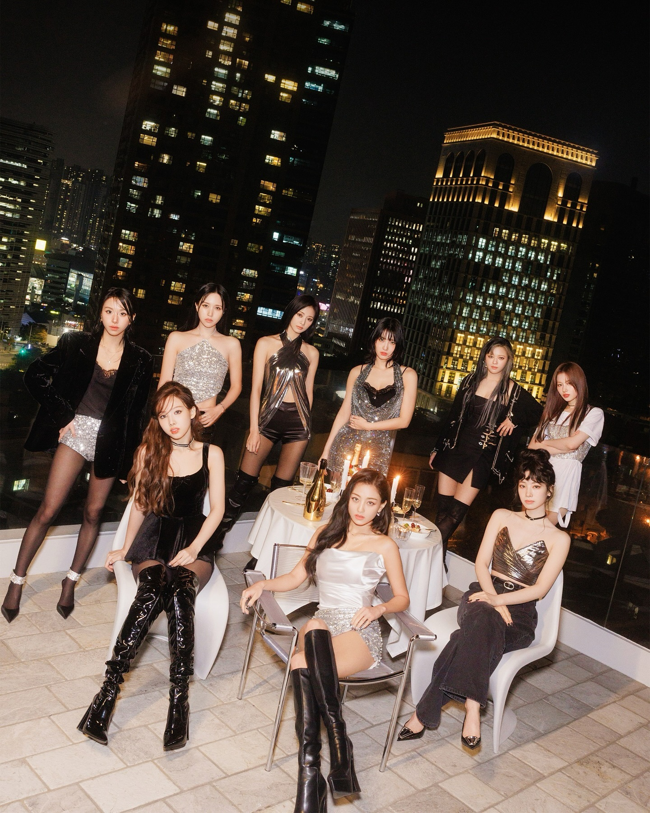

TWICE is a South Korean girl group formed by JYP Entertainment in 2015, consisting of nine members: Nayeon, Jeongyeon, Momo, Sana, Jihyo, Mina, Dahyun, Chaeyoung, and Tzuyu. Known for their catchy melodies, vibrant concepts, and captivating performances, they have become one of the most influential groups in K-pop. Their music spans various genres, from cheerful pop to mature and emotional sounds, showcasing their versatility and artistic growth. With their strong bond, distinct personalities, and dedicated global fanbase known as ONCE, TWICE continues to leave a lasting impact on the music industry.
Back to list